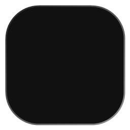
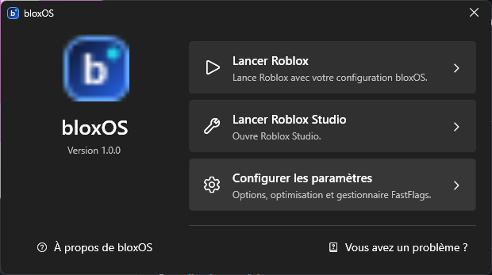
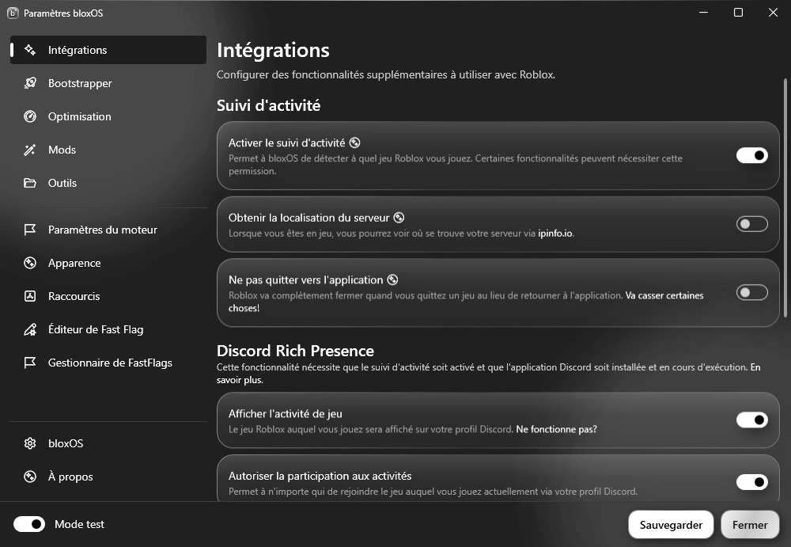

Installation simple
Télécharge l'archive, extrais-la puis lance bloxOS.exe. Le hash SHA256 est disponible dans SHA256SUMS.txt.

Un bootstrapper Roblox propre, rapide et personnalisable pour Windows.
Télécharger bloxOSTélécharge l'archive, extrais-la puis lance bloxOS.exe. Le hash SHA256 est disponible dans SHA256SUMS.txt.
Un menu de lancement clair et des paramètres organisés avec un thème sombre gris graphite.

